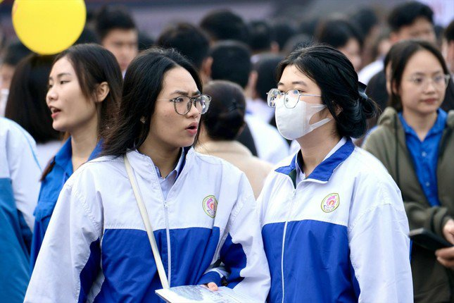

Quy về thang điểm chung, xét học bạ phải xét cả năm lớp 12
Điều 6 quy chế dự thảo nêu: “Điểm xét, điểm trúng tuyển của các phương thức, tổ hợp môn sử dụng để xét tuyển phải được quy đổi tương đương về một thang điểm chung, thống nhất đối với từng chương trình, ngành, nhóm ngành đào tạo.” Như vậy các thí sinh sử dụng kết quả thi ĐGNL của ĐHQG Hà Nội (HSA) không được sử dụng thang điểm 150 khi xét cùng một ngành với phương thức xét kết quả thi TN THPT, vốn có thang điểm truyền thống là 30.
Chia sẻ với VNExpress về vấn đề này, thầy Phạm Đăng Thanh, giáo viên Toán một trường THPT ở Chương Mỹ, Hà Nội, lấy ví dụ một học sinh giỏi thi được 120/150 điểm HSA, tương đương 24 điểm trên thang 30. Nếu so với thang đo của ĐHQG Hà Nội, bạn hoàn toàn có thể chắc suất tới các trường hàng đầu, nhưng nếu so cả với các phương thức khác thì tấm vé vào đại học đã tuột xa khỏi tầm tay.
Thầy Đinh Đức Hiền, Phó Hiệu trưởng trường Phổ thông liên cấp FPT Bắc Giang cho biết điều chỉnh này chỉ mang tính kỹ thuật nhưng từ cấu trúc đề đến mục đích thi đều khác nhau và được hội đồng chuyên môn nghiên cứu rất kỹ. Do vậy đặc biệt với các kỳ thi riêng, thầy cho rằng không nên quy đổi như vậy.
Cũng tại điều này, dự thảo nêu rằng trong trường hợp thí sinh đăng ký xét tuyển bằng kết quả học tập cấp THPT thì cơ sở đào tạo phải dùng kết quả học tập cả năm lớp 12 của thí sinh. Như vậy sẽ có sự xáo trộn nhất định khi không còn việc công bố kết quả xét tuyển sớm vào tháng 3 như các năm trước, khi năm học thường tới tận cuối tháng 5 mới kết thúc.
Thí sinh tham dự kỳ thi TN THPT 2024. Nguồn ảnh: Trường PT DTNT Bắc Giang.
Vẫn cho xét tuyển sớm nhưng đặt thêm điều kiện
Quy chế dự thảo lần này cũng đề cập cơ sở đào tạo quy định chỉ tiêu xét tuyển sớm nhưng không được vượt quá 20% tổng chỉ tiêu của ngành đào tạo. Điều này đồng nghĩa cứ 5 sinh viên nhập học năm 2025 thì chỉ có một người theo diện xét tuyển sớm.
VNExpress đã đưa ra khảo sát từ 22/11 và thu về hơn 11 000 ý kiến, trong đó có tới hơn một nửa đưa ra ý kiến phản đối vì quy định này hạn chế lựa chọn của thí sinh và quyền tự chủ của các trường.
Bạn Nguyễn Tấn Phát, học sinh trường THPT Chu Văn An (Hà Nội), đang cảm thấy rất lo lắng dù có điểm SAT đạt top 1% thế giới với 1520 điểm (tối đa 1600). Bạn cho rằng việc siết xét tuyển sớm làm tăng chất lượng đầu vào nhưng lại gây áp lực cho học sinh khi xét tuyển.
Thầy Hiền cho rằng học sinh đã quen với việc xét tuyển đại học bằng nhiều phương thức với chỉ tiêu lớn từ nhiều năm nay, nên quy định giới hạn này gây áp lực là điều dễ hiểu. Nhìn vào con số 20%, thầy không biết Bộ GD&ĐT căn cứ vào đâu để đưa ra giới hạn đó dù chính thầy đã tư vấn xét tuyển đại học cho rất nhiều lứa học trò.
Cũng trong dự thảo, lần này Bộ GD&ĐT đã siết chặt về việc xác nhận nhập học sau khi có kết quả xét tuyển sớm. Quy định từ năm 2022 chỉ đề cập “không được yêu cầu thí sinh xác nhận nhập học sớm hơn lịch trình theo kế hoạch chung”, nay sửa thành “không được yêu cầu thí sinh cam kết, xác nhận nhập học sớm hơn lịch trình theo kế hoạch chung theo bất cứ hình thức nào”.
Về điểm chuẩn trúng tuyển, dự thảo cũng nêu rằng điểm chuẩn trúng tuyển xét tuyển sớm không thấp hơn điểm chuẩn trúng tuyển theo kế hoạch chung. Điều khoản này có khả năng được đưa ra là để tránh trường hợp thí sinh xét kết quả thi TN THPT đạt tới 29/30 điểm của một tổ hợp môn nhưng vẫn không trúng tuyển.
Các trường dừng xét tuyển bằng học bạ THPT
Từ Đại học Kinh tế Quốc dân đến Đại học Sư phạm TP.HCM, phương thức xét tuyển bằng kết quả học tập cấp THPT (xét học bạ) đã không còn là phương thức được ưa chuộng. Đại học Kinh tế Quốc dân thậm chí loại bỏ phương thức xét tuyển bằng học bạ độc lập từ năm 2024, trong khi Đại học Sư phạm TP.HCM thì loại bỏ tất cả các phương thức xét tuyển có liên quan tới học bạ từ năm 2025.
Phó trưởng phòng Đào tạo, ĐHSP TP.HCM, ThS. Lê Phan Quốc trả lời báo Thanh Niên: “Kết quả học tập thể hiện trong học bạ THPT cũng khác nhau giữa các trường, cùng điểm 9 môn toán nhưng học sinh của trường này có thể khác với trường khác tùy theo cách đánh giá và thang đo.” Thầy Quốc cũng dựa vào số liệu từ công tác tuyển sinh các năm trước để lý giải cho sự thay đổi này.
Trường Đại học Nha Trang vẫn giữ phương thức xét học bạ, nhưng chỉ sử dụng cho mục đích sơ tuyển. Trưởng phòng Đào tạo nhà trường, PGS-TS Tô Văn Phương, nhấn mạnh học bạ của các bạn học sinh sinh năm 2007 sẽ khác hoàn toàn so với các lứa trước vì sẽ có những môn các anh chị đi trước đã học nhưng các em thì không. Do vậy nhà trường sẽ chỉ xét sơ tuyển các môn cần phải có, dẫn tới việc phải điều chỉnh phương án tuyển sinh để thích ứng với sự thay đổi này.